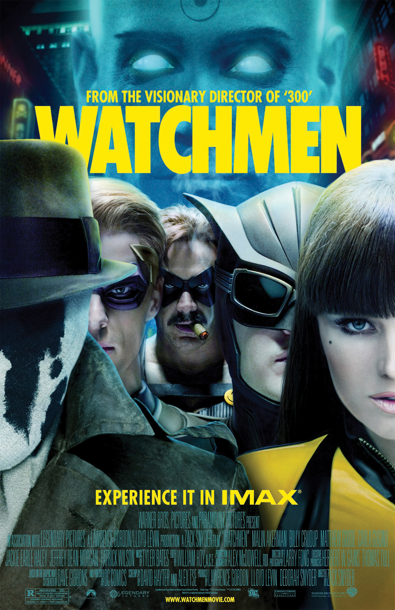

| Description | |
|---|---|
| 
Directed by Zack Snyder.
Release 02/23/2009 Lease Buy |
Trailer
The film is set in a parallel reality, in America in 1985. In this world, superheroes have become part of the daily life of society, and the Doomsday Clock, frozen five minutes from midnight, counts down until the collision of the world's leading powers. After killing one of his former colleagues, Rorschach - a superhero who never takes off his masks - is determined to commit a lynching. |
| Contact information | |